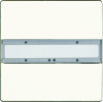
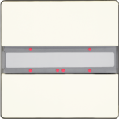
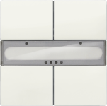
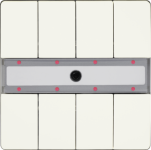
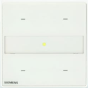
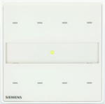
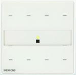

DELTA style product description
DELTA style wall switches have the following characteristics:
- Vertically arranged button pairs.
- Labeling field between the buttons.
- Mounted together with the design frame “DELTA style” onto a bus coupling unit (BTM).
- The electrical connection between the wall switch and the bus coupling unit (BTM) is established via the Bus Transceiver Interface (BTI).
- Vertically aligned buttons may be used as a pair of buttons, or as single buttons. Single buttons can be used for sending values, single-button switching/dimming or single-button control of blinds.
Note:
If available in your country, the assortment of GAMMA arina touch sensors is equivalent to the assortment of DELTA style. The engineering procedure and installation is identical to DELTA style.
 | UP 285/2, DELTA style wall switch, single
Order number: 5WG1 285-2DB_2 Download data sheet: 5WG12852DB_2 |
 | UP 285/3, DELTA style wall switch, single with status LED
Order number: 5WG1 285-2DB_3 Download data sheet: 5WG12852DB_3 |
 | UP 286/2, DELTA style wall switch, double
Order number: 5WG1 286-2DB_2 Download data sheet: 5WG12862DB_2 |
| UP 286/3, DELTA style wall switch, double with status LED
Order number: 5WG1 286-2DB_3 Download data sheet: 5WG12862DB_3 |

| UP 287/2, DELTA style wall switch, quadruple
Order number: 5WG1 287-2DB_2 Download data sheet: 5WG12872DB_2 |

| UP 287/3, DELTA style wall switch, quadruple with status LED
Order number: 5WG1 287-2DB_3 Download data sheet: 5WG12872DB_3 |

 | UP 287/5, DELTA style wall switch, quadruple with status LED / IR receiver decoder
Order number: 5WG1 287-2DB_5 Download data sheet: 5WG12872DB_5 |
| UP 201/2, GAMMA arina touch sensor, single
Order number: 5WG1 201-2DB_2 Download data sheet: 5WG12012DB_2 |

| UP 201/3, GAMMA arina touch sensor, single with status LED
Order number: 5WG1 201-2DB_3 Download data sheet: 5WG12012DB_3 |

| UP 202/2, GAMMA arina touch sensor, double
Order number: 5WG1 202-2DB_2 Download data sheet: 5WG12022DB_2 |

 | UP 202/3, GAMMA arina touch sensor, double with status LED
Order number: 5WG1 202-2DB_3 Download data sheet: 5WG12022DB_3 |
 | UP 203/2, GAMMA arina touch sensor, quadruple
Order number: 5WG1 203-2DB_2 Download data sheet: 5WG12032DB_2 |
| UP 203/3, GAMMA arina touch sensor, quadruple with status LED
Order number: 5WG1 203-2DB_3 Download data sheet: 5WG12032DB_3 |

 | UP 203/5, GAMMA arina touch sensor, quadruple with status LED / IR receiver decoder
Order number: 5WG1 203-2DB_5 Download data sheet: 5WG12032DB_5 |